شهادت دادن صرفا به معنای دیدن با چشم نیست بلکه به معنای گواهی دادنه. دیدن یکی از راه های درک و نتیجه گیریه.
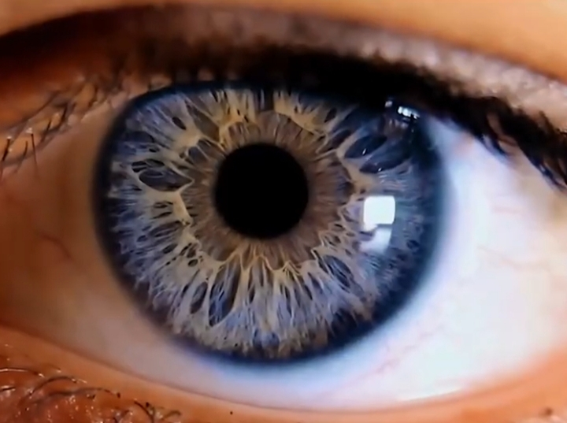
شنیدن، لمس کردن، بوییدن و چشیدن
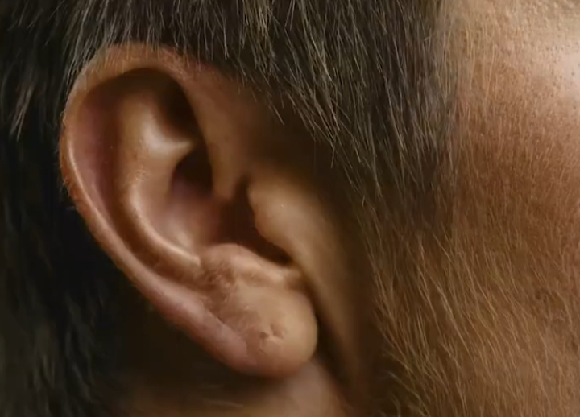
حواس دیگه ما هستن که میتونن مارو به یک نتیجه گیری برسونن. همه ما میدونیم که امواج رادیواکتیو
برای بدن مضره ولی چون ما اونو با چشم نمی بینیم آیا میتونیم اونو انکارش کنیم ؟
امواج الکترو مغناسیطی ، نیرو گرانش ، امواج مادون قرمز ، نیروی جاذبه در آهن ربا
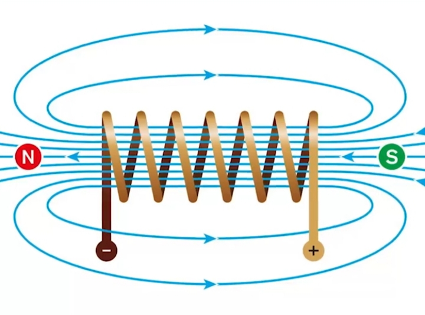
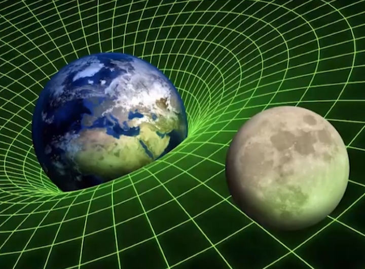
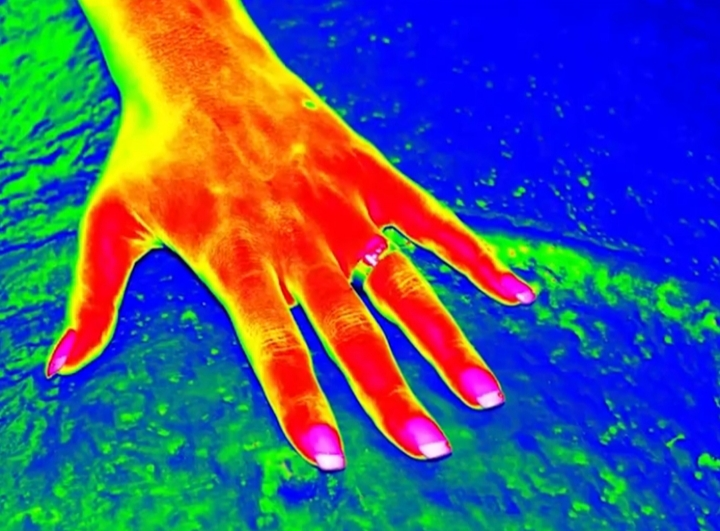
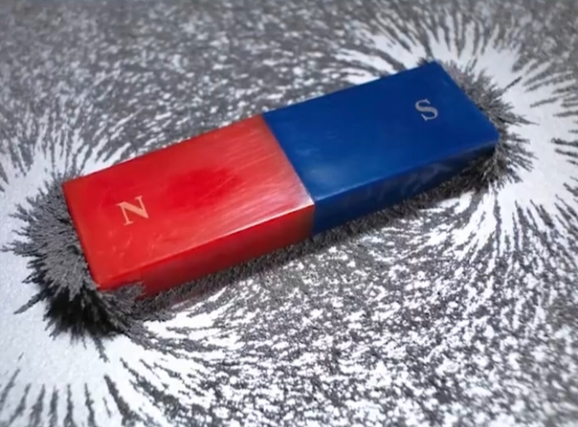
و خیلی چیز های دیگه هم با چشم دیده نمیشن اما اثر اونها برای ما قابل درکه و ما به وجود اونها باور داریم همینطور که در شهادتین میگیم
نه اینکه با چشم می بینم
یعنی من با فکر و تعقل و اندیشیدن
در نظم پیچیدگیهای جهان هستی با قلبم باور دارم
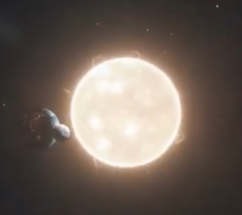
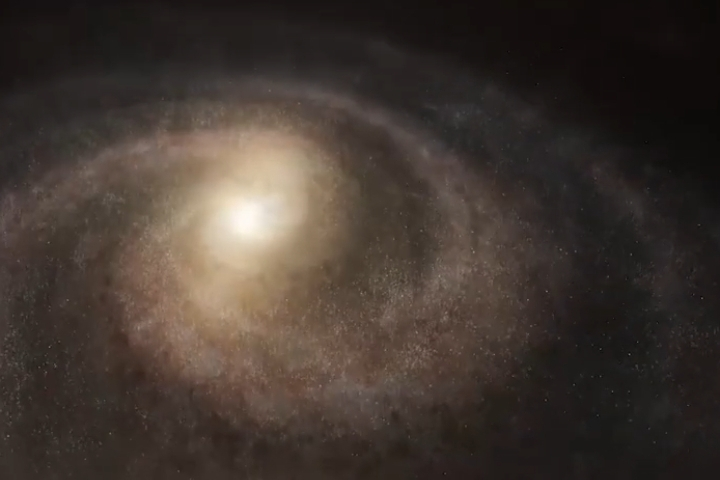
مثل دانشمند معروف آنتونی فِلو، استاد دانشگاه آکسفورد
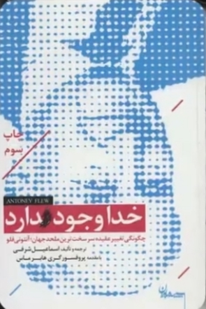
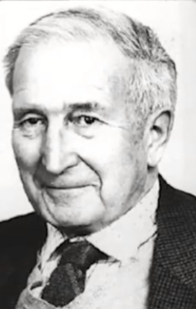
و یکی از معروفترین آتئیستهای جهان که فقط با بررسی نظم جهان هستی در سن ۸۱ سالگی به وجود خدا میرسد و کتاب «خدا وجود دارد» را مینویسد و چه زیبا خداوند در آیه ۳ سوره مُلک میگه:
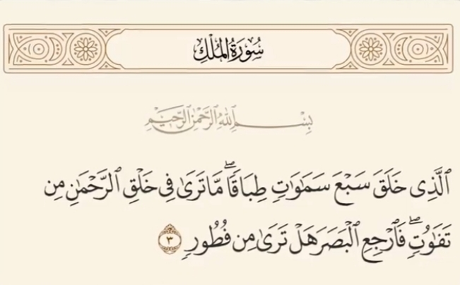
در آفرینش خداوند هیچ گونه ناسازگاری نمیبینی، نگاه کن آیا خطا و خلل میبینی؟